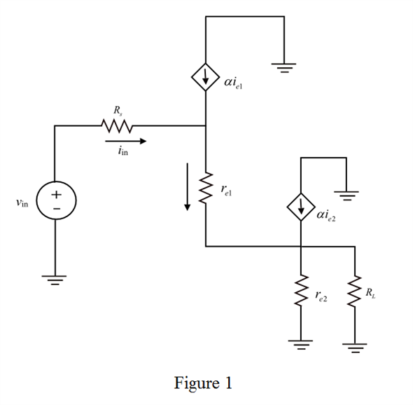
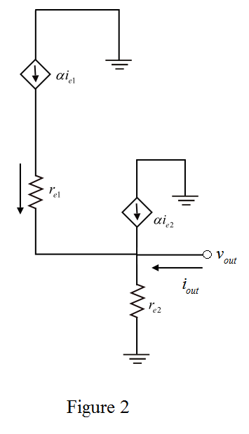

Refer to the Figure P7.83 in the text book.
Determine the emitter resistance of second transistor.
Substitute 25 mV for  and 10 mA for
and 10 mA for .
.
Determine the emitter resistance of first transistor.
Substitute 100 for  and for.
and for.
Refer to the Figure P7.83 in the text book.
Determine the emitter resistance of second transistor.
Substitute 25 mV for and 10 mA for.
Determine the emitter resistance of first transistor.
Substitute 100 for and for.
Draw the following small signal equivalent circuit diagram.

Apply Kirchhoff’s voltage law in Figure 1.
Substitute for and for.
Substitute for .
Substitute 100 for , for, for,
, for, for,  for
for  and for
and for 
Therefore, the value of input impedance is .
Draw the following circuit diagram to determine the output impedance.

From Figure 2, the output impedance of the circuit is,
Therefore, the value of output impedance is.
The expression of input voltage is,
…… (1)
The expression of output voltage is,
…… (2)
Divide equation (2) with equation (1).
Substitute 100 for , for, for
, for, for ,
,  for
for  and for
and for 

Therefore, the open circuit voltage gain is.
Determine the voltage gain with load resistor.
Therefore, the voltage gain with load resistor is.